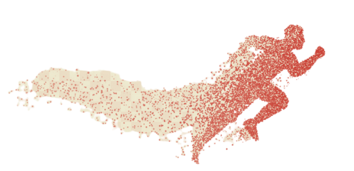

<nav *ngIf="visible">
    
    <ul class="menu">
        <li [routerLink]="['main']" routerLinkActive="activa">INICIO</li>
        <li [routerLink]="['formulario']" routerLinkActive="activa">CREAR EVENTO</li>
        <li [routerLink]="['comentarios']" routerLinkActive="activa">COMENTARIOS</li>
        <li [routerLink]="['enlaces']" routerLinkActive="activa">ENLACES DE INTERES</li>
        <li [routerLink]="['perfil']" routerLinkActive="activa">PERFIL</li>
        <li *ngIf="perfilService.estaLogado()" (click)="onSalir()" [routerLink]="['/intro']">LOG OUT</li>
    </ul>
</nav>
<router-outlet></router-outlet>
<footer *ngIf="visible">
    <div class="container">
        <p>Copyright &copy; 2020 -
            <a href="">Aviso Legal</a>
            <a href="">Cookies</a>
        </p>
    </div>
</footer>